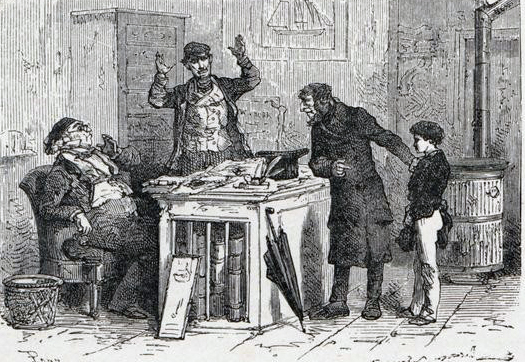

TÔI có một chú ruột tuy là huyết-thống họ Can nhưng lại thích ở đất-liền hơn là đi biển. Chú tôi làm thừa-phát-lại ở tỉnh Đôn và giàu-có lắm.

.Khi tôi từ Hòn Gianh trở về, mẹ tôi băn-khoăn về tương-lai của tôi, liền viết thư hỏi ý-kiến chú tôi. Đúng một tháng sau, chú tôi về Thiên-Cảng.
Chú tôi nói với mẹ tôi:
– Tôi không trả lời thư bác vì tôi định về thăm, không cần phải mất tiền tem cho nhà bưu-điện – Thời buổi này, khó kiếm tiền lắm -Tôi không về sớm được vì còn phải đợi dịp: tôi đã tìm được một chiếc xe bán cá tươi đi 15 dặm mất có 12 xu thôi. Lợi được tí nào hay tí nấy.
Theo lời lẽ đó, tôi dễ suy biết chú Si-Mông tôi là một người tiết-kiệm đến mực nào. Thì đây chú tôi cho luôn chúng tôi một bằng chứng cụ-thể về tính hiếm có đó.
Khi nghe rõ tình trạng gia-đình tôi, chú tôi nói:
– Tôi hiểu rồi, bác không muốn cho thằng bé này đi biển. Bác nghĩ phải lắm. Đó là một mạt nghệ không kiếm ra tiền. Bác muốn chấm dứt cái nghề mà nó đã khởi học ở nhà ông Chủ-nhật phải không? Được lắm. Nhưng bác không trông cậy vào tôi về tiền đấy chứ?
Mẹ tôi trả lời với một vẻ tự-hào kín-đáo
– Tôi không hề nghĩ đến việc xin tiền chú đâu!
– Tiền, tôi có đâu, người ta bảo tôi giàu, chỉ là đồn nhảm.
Mẹ tôi nói tiếp:
– Linh-mục làng bảo tôi rằng: người cha đã làm nhiều năm công-vụ chết đi thì con được vào trường Trung-học, không phải trả học-phí.
– Nhưng ai là người đi vận-động bây giờ? Không phải tôi đâu. Tôi không có thì giờ, vả tôi không muốn làm phiền những người có thế-lực mà tôi quen biết. Những người đó còn để dành cho tôi sau này sẽ cần đến. Anh em ông Lê-Hưng đã hứa cáng-đáng thằng bé, vậy họ phải trả tiền học cho nó.
– Họ không nói gì đến truyện đó.
– Thế để tôi nói truyện đó với họ.
Mẹ tôi định gạt đi thì chú tôi nói luôn
– Không cần cao-thượng với họ. Tôi bỏ công-việc đến đây là vì gia-đình bác. Thì bất cứ việc gì dù nhỏ đến đâu, tôi đã khuyên, bác cũng nên theo.
Rồi chú tôi quay lại bảo tôi:
– Mày, mày đến ngay hãng Lê-Hưng xem các ông ấy có ở văn-phòng không?
May hai ông ấy đều có mặt ở văn-phòng cả, chúng tôi cùng đến. Khi bước qua cửa phòng, mặt tôi đỏ lên vì tôi cho rằng đến đòi tiền những kẻ ích-kỷ như thế là bôi nhọ sự hy-sinh cao-cả của cha tôi.
Nghe lời yêu-cầu của chúng tôi, hai anh em Lê-Hưng giẫy sần-sận trên ghế như bị kim châm.
Người em nói:
– Cho vào trường Trung-học?
Người anh kêu:
– Trường Trung-học kia à?
Cuộc bàn cãi lộn-xộn và ầm-ỹ bắt đầu.
Chú tôi không chịu thua. Khi hai người đồng thanh nói “chúng tôi đã làm quá những điều mà chúng tôi hứa, chúng tôi đã cho bà quả-phụ có việc làm ”, chú tôi phát ra một tiếng cười khẩy, làm cho họ phải ngừng lại.
Rồi họ cứ một luận-điệu ấy nhắc đi nhắc lại đến năm, sáu lần, chú tôi tức quá, nói to:
– Các ông kêu các ông thiệt à? Các ông cho… các ông cho… các ông cho… công-việc để bà ấy làm. Việc làm của bà ấy không đáng 10 xu tiền công ông trả với xuất cơm nuôi hay sao? Các ông trả công bà ấy đắt hơn các thợ khác hay sao?
Người em nói:
– Chúng tôi trả bà ấy tiền ngay không để đến cuối tuần như các thợ khác. Ông vừa nói ông Can-Bich đã chết vì cứu của-cải của chúng tôi, có phải không? Thế là ông nhầm. Ông ấy chết vì cứu những thủy-thủ như ông ấy sắp bị đắm. Như vậy, ông phải hiểu rằng đó không phải là trách-nhiệm của chúng tôi, mà là việc của Chính-Phủ. Chính-Phủ có những công-quỹ dành cho những người thích làm hào-hiệp. Nhưng dù sao, khi đứa bé này lớn lên, chúng tôi sẽ cho nó việc làm. Có phải không, thưa anh?
Người anh đáp:
– Cho việc làm, nó muốn bao nhiêu cũng được.
Đó là thắng-lợi sau cuộc vận-động của chú tôi.
Khi chúng tôi ra rồi, chú tôi nói:
– Đó là những người….
Tôi đoán chú tôi sẽ nhục-mạ họ nhưng không, vì chú tôi nói:
– Đó là những người đáng khen (vì chú tôi thấy những người “đá” hơn chú tôi), họ có thể làm gương cho cháu được. Họ biết trả lời rằng “không”. Con nên nhớ kỹ tiếng đó. Với tiếng đó và với một tiếng đó thôi, người ta quyết nắm chắc đồng tiền người ta kiếm được.
Không thể cho tôi vào trường Trung-học với túi tiền của anh em ông Lê-Hưng, chú tôi đề-nghị với mẹ tôi cho tôi về ở với chú tôi. Chú tôi đang cần một người thư-ký. Nhưng tôi còn nhỏ tuổi không phụ-trách được việc đó. Mẹ tôi phải cam-kết cho tôi ở với chú trong năm năm, cơm nuôi, không rõ tiền công. Chưa hết hạn mà tôi bỏ về, mẹ tôi sẽ phải bồi-thường cho chú tôi số tiền phí-tổn đã nuôi tôi. Vì tôi là cháu ruột nên chú tôi mới phải cố gắng để tỏ tình thương-xót họ-hàng.
Than ôi! Thế là cái mộng của mẹ tôi cho tôi vào trường Trung-học biến thành ra khói. Nhưng ít ra cũng giữ tôi khỏi theo nghề đi biển, vì thế tôi phải đi ở với chú tôi. Cuộc ly-biệt đau buồn! Tôi khóc. Mẹ tôi khóc nhiều hơn tôi. Còn chú tôi len vào giữa hai người, dun mẹ tôi lại và đẩy mạnh tôi đi.
Phong-cảnh thành-phố Đôn có tiếng là đẹp, nhưng đẹp có chăng đối với du-khách mà thôi, chứ tôi, tôi nhìn mọi vật chỉ thấy buồn và chán. Khi tôi tới nơi thì đêm vừa xuống. Trời lại mưa lạnh. Ngoài cái buồn, tôi còn thấy đói, rủn chân không bước đi được.
Đi suốt ngày hôm đó, chú tôi không hề nói đến việc nghỉ để ăn, thành ra tôi cũng không dám nhắc đến. Sau khi đi quanh trong hai ba phố vắng, chú tôi dừng trước một ngôi nhà cao ngoài có cổng xây với những hàng cột to lớn. Chú tôi lấy chìa mở khóa. Tôi chực vào. Chú tôi ngăn lại vì cửa mở chưa xong, chú tôi lấy cái chìa khóa thứ hai rồi đến cái chìa thứ ba to tướng ra mở, lưỡi khóa kêu ken-két và nặng- nề. Ba cái khóa cửa làm tôi ngạc-nhiên và sợ-hãi. Ở nhà, mẹ tôi thường buộc cửa bằng dây. Cửa nhà ông Biên-Gia cũng chỉ có một cái chốt nhỏ. Tại sao nhà chú tôi lại khóa cẩn- thận đến thế?
Chú tôi đóng chặt cửa lại, dắt tôi đi qua hai phòng tối-tăm, tôi thấy rộng lắm và chân tôi đi trên một nền lát đá như ở nhà thờ. Một mùi là-lạ thoảng qua mũi tôi, có lẽ là mùi bìa da và mùi giấy mốc. Khi đèn thắp lên rồi, tôi nhận thấy chúng tôi đang ở trong một gian bếp vì tôi thấy lủng-củng những tủ bát, chạn và ghế mây. Thành ra gian này coi hẹp hẳn đi.
Mặc-dầu cảnh-tượng không được đẹp mắt, nhưng tôi vẫn vui, vì tôi nghĩ sắp được sưởi ấm và ăn no.
Tôi hỏi chú tôi:
– Thưa chú, có dóm lò không để con làm.
– Dóm lò kia à?
Nghe lời nói xẳng của chú tôi, tôi không dám thưa với chú tôi rằng tôi rét buốt đến tận xương và răng tôi lập-cập vào nhau.
Chú tôi nói:
– Chúng ta ăn bánh rồi đi ngủ.
Rồi ông lại tủ, lấy một ổ bánh, cắt ra hai khoanh mỏng, kèm mỗi khoanh một miếng phó-mát, đưa cho tôi một khoanh, còn một khoanh, phần ông, ông để xuống bàn. Xong ông lại cho ổ bánh vào tủ khóa lại
Ngay lúc đó có ba con mèo còm ở đâu nhảy vào và đến cọ đầu vào chân chú tôi: một tia hy-vọng nẩy ra trong óc tôi. Chúng đòi ăn, tất nhiên chú tôi phải mở tủ.Tôi sẽ có dịp xin thêm khoanh bánh nữa.
Nhưng ông không mở tủ, ông nói:
– Những con mèo này khát nước đây. Đừng để nó hóa điên.
Rồi ông lấy nước cho chúng uống.
Ông nói tiếp:
– Bây giờ mày đã ở đây rồi. Đừng bao giờ để chúng khát nuớc. Ta giao cho mày việc đó.
– Còn việc cho chúng ăn?
– Ở đây sẵn chuột cống và chuột nhắt đủ nuôi chúng. Nếu ta cho chúng ăn ứ họng, chúng sẽ sinh lười ra.
Bữa ăn của chúng tôi chấm dứt rất chóng. Chú tôi nói sẽ đưa tôi đến căn phòng từ nay dành hẳn cho tôi.
Cảnh đồ-đạc ngổn-ngang tôi trông thấy ở trong bếp bây giờ lại xuất hiện ở trong cầu thang. Cầu thang làm rất rộng nhưng khó có chỗ len chân vì ở trên các bậc sắp dày những phên sắt dỉ, những đồng-hồ, những tượng bằng gỗ, bằng đá, những máy quay thịt, những chậu sứ, những bình hoa hình-thù kỳ-dị. Chân thang xếp những bàn đủ kiểu, mà tôi không biết tên và không biết dùng để làm gì. Trên tường treo kín những khung, những tranh, những kiếm, những mũ. Tất cả mọi vật đó làm tôi loạn mắt, gia-dĩ ngọn đèn dầu tù-mù lại đưa ra một ánh-sáng chập-chờn. Mớ thập vật ấy không biết có ích gì cho chú tôi?
Đó là một câu hỏi mà tôi nghĩ mãi không ra. Mãi sau này tôi mới biết ngoài cái nghề thừa-phát-lại, chú tôi còn làm kèm một nghề khác phát tài hơn.
Rời Thiên-Cảng từ tấm bé, chú tôi được đưa ra Ba-Lê ở cho một ủy-viên phách-mãi (người bán đấu giá). Sau hai mươi năm tập việc, chú tôi ra lập một sở sự-vụ ở thành Đôn. Tuy-nhiên sở sự-vụ này chỉ là một nghề phụ, chứ nghề chính của chú tôi là nghề buôn-bán những bàn ghế cũ, những đồ cổ bằng gỗ, bằng sứ, bằng đồng. Do nghề thừa-phát-lại, chú tôi nắm được những dịp tốt hơn ai hết và tha-hồ trục-lợi. Mượn tên người khác, chú tôi mua cho mình những đồ vật quí-giá để rồi bán cho các lái buôn lớn ở Ba-Lê, được lãi rất nhiều.
Căn phòng mà chú tôi dành cho tôi rộng lắm nhưng xếp đầy đồ-đạc khiến tôi tìm mãi mới thấy chỗ để giường tôi. Trên tường, treo những bức màn lớn vẽ những hình người to bằng người thật. Dưới trần móc những da vật nhồi rơm: một con chim cốc, mỏ vàng, một con cá sấu há mồm nhăn răng ghê-gớm. Góc phòng sau một cái tủ, treo một bộ áo giáp trên có mũ sắt trông như một người chiến-sĩ đứng lù-lù bị tủ che khuất hai cái chân.
Thấy tôi có vẻ hoảng hốt, chú tôi hỏi:
– Mày sợ à?
Tôi không dám nói thật và chỉ kêu là rét lắm thôi.
Chú tôi bảo:
– Vậy thì đi ngủ mau lên! Ta sẽ mang đèn ra. Ở đây người ta ngủ không đèn.
Tôi len vào giường ngủ. Chú tôi vừa đóng cửa thì tôi gọi giật lại:
– Chú ơi! Chú ơi!
Vì tôi thấy bộ áo giáp kêu lắc-rắc.
Chú tôi trở vào:
– Gì thế?
– Thưa chú, có người trong bộ áo giáp.
Chú tôi đến sát chỗ tôi, nhìn thẳng vào mặt tôi mà bảo:
– Từ nay đừng có nói bậy thế. Nếu không ta đánh đòn.
Hơn một tiếng đồng-hồ, tôi nằm yên dưới tấm dạ ẩm, trong người run-run vì sợ, vì rét và đói. Tôi nhắm mắt lại. Nhung ở các góc nhà ở đằng sau các đồ gỗ hình như có một sức hút của nam-châm nó kéo mí mắt tôi lên, không cho nhắm lại. Vì thế, mặc-dầu tôi không muốn trông, mắt tôi cứ mở to ra. Ngay lúc đó một trận gió mạnh thổi qua nóc nhà, tiếng kêu răng-rắc. Những tấm màn tường lay động, một người mặc quần-áo đỏ tách ở màn ra giơ tay vung kiếm, con cá sấu há mồm nhảy múa ở đầu dây và bao nhiêu là hình thù đen đen đùa rỡn ở trên trần. Ông tướng ở sau tủ thấy động đang cựa mình trong lớp áo giáp. Tôi sợ quá, Muốn kêu lên, muốn giơ tay lên cầu cứu ông tướng áo giáp để đánh giúp người áo đỏ đang vung kiếm trước mắt tôi, nhưng tôi không sao nói được, cứ nằm như sắp chết.
Chú tôi lay tôi, tôi tỉnh dậy thì trời đã sáng. Tôi tìm ngay người áo đỏ thì hắn đã nhập vào bức màn rồi.
Chú tôi bảo:
– Từ mai, mày phải dậy một mình và sớm hơn nữa. Bây giờ, mày dọn giường mau lên rồi ra đây ta dặn các việc phải làm trong khi ta đi vắng.
Ngày nào cũng thế chú tôi dậy từ bốn giờ sáng xuống văn-phòng cặm-cụi làm việc cho đến tám, chín giờ là lúc các thân-chủ đến mời chú tôi di. Trong khoảng thời-gian bốn, năm giờ đó tôi phải ngồi chép lại các giấy tờ cần dùng trong ngày hôm đó.
Khi chú tôi vừa ra khỏi nhà là tôi đình-chỉ mọi việc mà chú tôi đã giao cho tôi, vì từ lúc tôi dậy, óc tôi chỉ nghĩ có một việc: việc người áo đỏ múa gươm. Nếu đêm mai, người đó lại hiện ra thì tôi đến chết mất. Tôi bèn đi lùng khắp nhà tìm được một cái búa và mấy cái đinh. Tôi đến thẳng chỗ màn vẽ người áo đỏ: bấy giờ trông anh ta hiền-từ quá và đứng im giữa bức màn. Tôi không tin bộ-dạng giả-trá của anh ta. Tôi lấy búa và đinh đóng luôn hai tay anh ta vào tường, ông tướng áo giáp định cựa-cạy tôi liền đập cho một búa vào ngực. Bây giờ trời đương nắng, không phải là lúc tà ma hiện hình, tôi không sợ. Tôi lại giơ búa dọa con cá sấu nếu muốn yên thân không được nhẩy múa nữa.
Nạt-nộ bọn ma quái xong, tôi lại xuống văn-phòng tiếp tục làm hết việc cho đến khi chú tôi về.
Ông ra vẻ hài lòng. Mỗi khi tôi làm xong việc, ông cho tôi giải-lao bằng cách lau bụi và đánh bàn ghế chơi.
Đời sống mới của tôi bây giờ so với đời sống ở bên cạnh ông Biên-Gia khác biệt nhau biết chừng nào!
Tôi cam chịu làm việc 14 giờ một ngày nhưng tôi không sao quen được cái nếp sống kham khổ của chú tôi. Bánh cho vào tủ khóa không phải là một việc bất thường mà là một định-luật. Tôi bắt buộc phải nhận miếng bánh mỏng chia phần cho tôi.
Đến ngày thứ năm, tôi đói quá. Lúc chú tôi sắp khóa tủ, tôi đánh liều chìa tay ra. Chú tôi vừa khóa chốt cửa tủ vừa bảo tôi:
– Mày muốn ăn miếng nữa. Mày xin thêm, phải lắm. Từ chiều hôm nay, ta sẽ cho mày cả ổ bánh, ổ bánh đó là của mày. Hôm nào mày đói lắm, mày muốn ăn bao nhiêu cũng được.
Tôi muốn nhẩy lên hôn cảm ơn chú tôi.
Nhưng chú tôi nói tiếp:
– Nhưng mày phải dè sẻn làm sao cho ổ bánh đó ăn được một tuần-lễ. Việc ăn uống cũng phải có chuẩn-tắc như mọi việc khác. Ba-mưoi-tám déca-gam bánh mỗi ngày cũng gần bằng số bánh người ta phát cho các kẻ khó trong viện tế-bần. Số bánh đó dùng dủ cho một người thì cũng dùng đủ cho mày.
Tôi không đợi đến lúc vắng người, liền chạy tra tự-vị. Thì ra mỗi déca-gam là mười gam. Ba mươi tám déca-gam là 380 gam mỗi ngày thì mỗi bữa chỉ có 190 gam thôi. Như thế thì sống sao được?
Tôi muốn tự giải quyết vấn-đề. Trước khi đi, mẹ tôi cho tôi đồng bạc 40 xu.
Tôi đến ngay hàng bánh hỏi mua 38 déca-gam. Phải cắt nghĩa mãi cho bà hàng bánh nghe bà mới chịu cân cho 40 déca-gam tức 400 gam bánh, 380 déca-gam hay 400 gam bánh nghĩa là không được nửa kí-lô bánh một ngày. Đó là xuất ăn mà chú tôi đã rộng lượng phát cho tôi. Bữa ăn sáng mới cách độ một giờ mà tôi đã thấy thèm. Xong không đến 10 phút, tôi đã ăn ngấu-nghiến hết 400 gam bánh đã mua. Vì thế, đến bữa chiều, tôi không thấy đói lắm.
Bữa đó, trông thấy tôi dè-dặt cắt ra một khoanh bánh mỏng, chú tôi hiểu lầm và bảo tôi:
– Ta biết mà: cái gì của mình thì dè-sẻn, còn của người khác thì phung-phí.
Tôi còn 35 xu, tiêu được nửa tháng: mỗi ngày phải mua 25 déca-gam bánh ăn thêm.
Mỗi khi chú tôi đi là tôi chạy sang hiệu mua bánh để ăn thêm, vì thế bà hàng bánh hiểu rõ tình cảnh tôi.
Hôm tôi hết tiền, bà hàng ái ngại cho tôi và bảo:
– Ông nó nhà tôi và tôi không biết viết, nên thứ bẩy nào cũng phải nhờ một người khách hàng quen cộng sổ giúp. Nếu em muốn làm việc đó, ta sẽ trả công cho em mỗi sáng thứ hai là hai chiếc bánh ngọt.
Còn nói gì nữa, tôi vội vàng nhận ngay. Nhưng lòng tôi thích được một cân bánh mì hơn là hai chiếc bánh ngọt.
Ngày ấy, tôi khổ vì đói, tôi đan-cử một việc sau đây để quý độc-giả suy-đoán cái đói của tôi đã đến mực nào?
Sau nhà chú tôi là một cái sân con, cách nhà hàng xóm bằng một bức rào. Đó là nhà ông Bá-Huân, ông không có vợ con, tính thích nuôi loài vật. Trong các gia-súc đó, ông yêu nhất con chó trắng, giống chó Py-rê-nê, tên gọi là Pa-Tô. Sợ nuôi trong nhà hại cho sức khỏe của nó, ông làm cho nó một cái lều rất đẹp ở sát hàng rào nhà tôi. Và cũng sợ cho ăn với chủ hại cho sức khỏe của nó – vì ăn nhiều thịt và thức ăn ngon có thể sinh ra bệnh ghẻ lở – mỗi ngày ông cho nó ăn hai bữa súp sữa. Cũng như tất cả con chó nhàn-hạ khác, con Pa-Tô rất biếng ăn và khó tính, nên nếu nó ăn bữa sáng thì nó bỏ bữa chiều hay nếu nó ăn bữa chiều thì nó chê bữa sáng, thành ra ngày nào cũng có một chậu sữa còn nguyên không đụng tới.
Khi ra sân, tôi trông qua hàng rào thấy những miếng bánh trắng nổi trên mặt sữa. Và con Pa-Tô nằm ngủ bên cạnh chậu. Chân rào có một lỗ trổng, con Pa-Tô thường chui sang sân nhà tôi. Con chó có tiếng là dữ, chú tôi tỏ ý rất thích. Và thường bảo tôi: đó là một phu gác tốt hơn những khóa sắt mà lại có lợi là không mất đồng nào. Mặc-dầu nó dữ thực nhưng rồi nó cũng thành bạn thân của tôi. Hễ thấy bóng tôi ra sân là nó chồm sang chơi với tôi. Một hôm nó tha mũ tôi vào ổ nó, tôi gọi mãi nó cũng không chịu trả. Tôi đành chui sang. Một chậu đầy sữa thơm vẫn để chỗ mọi ngày. Buổi đó là chiều thứ bẩy, phần bánh của tôi trót ăn quá miệng trong tuần nên chỉ còn một mẩu con. Tôi liền quỳ ngay xuống, hớp một lèo chất sữa thơm ngon, trong khi con Pa-Tô ngoe-nguẫy đuôi nhìn tôi. Con chó đó thực là một người bạn thân, bạn tốt của tôi. Từ đó, mỗi lần tôi bò sang ăn sữa nó lại chạy ra đón và lấy lưỡi liếm vào người tôi. Thế đủ rồi, tôi không muốn gì hơn nữa. Nếu con Pa-Tô còn ở đấy mãi thì chắc-chắn đời tôi không phải luân-lạc và xẩy ra những chuyện tôi đang kể đây. Bấy giờ là mùa ông Bá-Huân đi nghỉ mát ở miền quê. Ông ta đưa cả con chó quí đi. Thành ra tôi mất một người bạn, trông đi trông lại trong nhà chỉ có chú tôi thôi.
Những ngày buồn làm sao! Những lúc rỗi việc ngồi một mình trong văn-phòng, tôi nhớ nhà, nhớ mẹ tôi. Tôi cũng muốn gửi thư cho mẹ tôi nhưng một lá thư từ thành Đôn đến Thiên-Cảng phải mất 10 xu bưu-phí. Tôi biết mẹ tôi làm được có 10 xu một ngày nên tôi không dám gửi thư qua bưu-chính. Vì thế mẹ tôi và tôi đều phải thăm tin nhau do trung-gian của người hàng cá thường đi về những ngày phiên chợ.
Vì có món ăn phụ kiếm được bên hàng xóm, nên tôi không chú ý đến miếng bánh thường-lệ của tôi. Từ ngày mất món ăn phụ, tôi để ý mới biết có ngày phần bánh của tôi tự-nhiên bé hẳn di. Bánh của chú tôi bao giờ cũng bỏ tủ khóa, còn bánh của tôi thì bỏ vào một ngăn bỏ ngỏ, nhà không có người lạ nên tôi không sợ ai động vào. Sau mấy ngày nhận xét thấy có hôm tấm bánh lẹm hẳn đi, tôi để ý rình. Đang nấp sau cánh cửa tôi thấy chú tôi vào cắt một khoanh bánh của tôi.
Ức quá, tôi quên cả sợ-hãi, chạy xô ra, kêu:
– Chú ơi! Bánh của con đấy!
Chú tôi điềm-đạm đáp:
– Mày tưởng tao ăn của mày à?. Đây là để cho mèo trắng. Nó mới đẻ. Mày muốn nó chết đói à? Phải biết thương loài vật, mày quên rồi hay sao?
Từ đó tôi không yêu chú tôi nữa và tôi cũng bớt phần kính-trọng.
Những ông thừa-phát-lại ở nhà quê là bạn của dân, và thường mục-kích những cảnh cơ-khổ của họ. Với nghề đó, chú tôi còn kiêm nghề cho vay lãi – Nói cho đúng là nghề “hút máu đồng-bào”. Ngày nào ở trước cửa phòng việc của chú tôi cũng tụ-tập đủ các hạng người, nghèo-khổ có, gian-phi có.
Có những người đàn-bà khóc-lóc, kêu-van, có những người đàn ông quỳ xuống xin hoãn một hạn 30 ngày, một tuần hay vài giờ để chạy tiền trả nợ. Cảnh thương-tâm đó bày rất nhiều, nói ra không hết.
Tuy tôi nhìn rõ trái tim trơ rắn của chú tôi nhưng tuổi tôi còn bé, tôi không thể biết được những khôn-khéo, những mánh-khóe, những mưu-mô quỷ-quyệt bên trong nghề của chú tôi. Một hôm nhìn thấy một cảnh trái mắt, tôi còn dự vào thành ra tôi bị một mẻ suýt chết, như quý độc-giả sẽ coi đây.
Chú tôi mới mua được một tòa lâu-đài cổ, chú tôi cho sửa chữa hoàn toàn lại cho hợp nghi. Chiều thứ bẩy nào, thợ-thuyền và chủ-thầu cũng tấp-nập đến lĩnh tiền. Chiều thứ bẩy nọ, tôi thấy người Phó Nề đến. Trông thấy một mình tôi, ông ấy lấy làm lạ vì theo lời ông nói thì chú tôi đã hẹn ông đến để tính trả tiền ông. Ông ta ngồi đợi.
Một giờ, hai giờ, bốn giờ đã qua. Không thấy chú tôi về. Ông Phó Nề cũng cứ đợi. Mãi tám giờ tối chú tôi mới về.
Chú tôi vội hỏi:
– Kìa, ông Phó Phan đấy à? Có việc gì thế?
– Ông có hẹn tôi đến để ông trả tiền.
– Ừ phải đấy. Nhưng bực quá. Hết cả tiền.
– Mai mới là kỳ lương của tôi. Ngoài tiền lương, tôi còn thiếu hơn ngàn phật-lăng nữa để trả món nợ do bạn đồng-nghiệp của ông đang kiện đòi tôi. Tôi đã thưa chuyện với ông và ông đã hẹn nay xin ông giữ “lời” cho.
Chú tôi đáp:
– Lời? Lời gì? Tôi có bảo với ông thế này không: “ tôi lấy lời danh-dự hẹn với ông rằng thứ bẩy tôi trả tiền ”? hay tôi chỉ bảo: “Thứ bẩy ông đến tôi sẽ trả”? Ông Phó Phan ơi! Ông phải biết hai câu nói đó khác nhau. Ông đừng lẫn-lộn như vậy.
– Xin lỗi ông, tôi quê mùa không biết tính-nghĩa các câu nói đó. Tôi chỉ biết: khi tôi nói: “ thứ bẩy tôi sẽ trả” thì tôi trả.
– Nhưng nếu ông không thể trả được thì sao?
– Nếu tôi đã hứa thì tôi có thể trả được!
Ông Phó Nề liền trình bày hoàn cảnh của ông: Ông đã làm tờ cam-kết, nếu mai khâng có tiền thì thứ hai thừa-phát-lại sẽ tịch-biên nhà ông. Vợ ông đang hấp-hối, phải nhìn cảnh đó, sẽ chết mất. Nghe xong, chú tôi đáp gọn-lỏn:
– Không có tiền ông ạ.
Lúc đó hình như có một sức mạnh gì xui giục tôi giúp-đỡ người Phó Nề khốn-nạn, không sợ làm thất ý chú tôi. Khi chú tôi nhắc đến lần thứ mười câu:
– Nếu tôi có tiền, tôi đưa ông ngay.
Tôi liền nói to:
– Có tiền đấy!
Tức thì một cái chân ở gầm bàn đá phập vào hai chân tôi đau quá tôi ngã vập vào cạnh bàn tím cả mũi.
Chú tôi đứng dậy ôn-tồn hỏi:
– Sao thế con?
Rồi lại gần, nghiến răng bẹo vào cánh tay tôi kéo lên, đồng-thời quay ra nói với ông Phó Nề:
– Thằng bé vụng-về quá!
Ông Phó Nề không nhìn thấy cái đá ở gầm bàn và cảm thấy cái đau vì bẹo, nhìn chúng tôi một cách ngạc-nhiên và tưởng rằng chú tôi tìm cách để lảng câu chuyện nên lại trở lại vấn-đề cũ, ông nói:
– Vì ông có tiền….
Chú tôi cãi:
– Tiền đâu?
Tức quá, tôi rút mấy cuộn giấy bạc ở ngăn kéo, ném trên bàn, nói:
– Tiền đây.
Cả hai người đều đưa tay ra lấy.
Chú tôi nhanh tay, vồ được.
Không chối cãi được nữa, chú tôi phải nói:
– Ông Phó ơi! Số tiền này đáng lẽ mai tôi mới có, tôi phải cố-gắng thu về hôm nay là đê ngày mai trả một món nợ tối khẩn. Nhưng nếu ông cần gấp thì tôi cũng trả ông. Đây, đơn hanh-toán đây, ông ký nhận vào là tôi đã trả hết. Số tiền này là của ông.
Tôi tưởng ông Phó Nề sẽ nhẩy đến hôn cám ơn chú tôi, chú tôi thực ra không phải là người ác-tâm như người ta tưởng nhầm. Nhưng không phải thế.
Ông Phó kêu:
– Chết chửa? Đơn thanh-toán của tôi, là hơn 4 ngàn phật-lăng chứ? Chính ông đã trừ đầu trừ đuôi nên chỉ còn có thế, mà bây giờ còn định rút nữa à?
– Ông không cần ba ngàn à? Thôi được. Cảm ơn ông Tôi định trả là để giúp ông trong lúc cấp bách.
Ông Phó Nề lại giải-thích, lại trình-bày, lại kêu van. Nhưng mặt chú tôi cứ lạnh như tiền. Biết là nói mấy cũng không chuyển, ông Phó Nề đành cầm lấy lá đơn thanh-toán, ký đại.
Xong với một giọng nghẹn-ngào, ông nói:
– Ông đưa tiền đây.
Chú tôi đáp:
– Tiền đây.
Cầm tiền xong, ông Phó Nề đứng đậy, đội mũ lên đầu, nhìn thẳng vào chú tôi, nói:
– Ông Si-Mông ơi! Tôi nói thực: tôi thích nghèo như tôi còn hơn giàu như ông.
Chú tôi tái mặt lại môi hơi run-run, nhưng định-thần lại ngay, cười cười và nói:
– Cái đó tùy thích.
Rồi tươi cười, đưa chân ông Phó Nề ra tận cửa như tiễn một người bạn thân.
Lúc trở vào – tôi đang ngồi ghế – chú tôi thẳng tay tát tôi môt cái thật mạnh tôi ngã hẳn xuống đất.
Chú tôi quát:
– Bây giờ, tao với mày thôi. Mày giở trò tao xem. Mày mách tao có tiền, mày biết mày mách thế để làm gì chứ?
Tôi tuy bị đau điếng người, nhưng tinh-thần tôi còn tỉnh, tôi nói trả thù:
– Đúng lắm.
Chú tôi định nhẩy vào tôi, tôi đã đề-phòng, tôi chui luôn xuống gầm bàn rồi lẻn sang bên kia để cái bàn chắn chú tôi.
Thấy tôi lánh thoát, chú tôi liền mắm miệng vớ một quyển luật to tướng ném trúng người tôi, tôi ngã dúi xuống đất, đầu đập vào góc tủ. Tôi lặng người, không sao đứng dậy được.
Sau cùng, tôi cố vịn vào tường để đứng lên, máu đầu chảy xuống khắp mặt khắp mình. Chú tôi điềm-nhiên đứng nhìn không cứu chữa.
Lúc lâu, chú tôi bảo:
– Đi lấy nước rửa đi! Đồ khốn! Nếu lần sau còn thế, tao giết chết mày.
– Cháu muốn về.
– Về đâu?
– Nhà mẹ cháu.
– Thật chứ? Nhưng mày không đi được đâu, mẹ mày đã cam-kết cho mày ở với tao năm năm kia và tao không bằng lòng cho mày ra… cháu muốn về, nhà mẹ cháu, mẹ cháu, mẹ cháu đồ ngu!